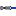
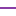

<!doctype html>
<html lang="en">
    <head>
        <meta charset="utf-8">
        <meta http-equiv="X-UA-Compatible" content="IE=edge">
        <meta name="viewport" content="initial-scale=1,user-scalable=no,maximum-scale=1,width=device-width">
        <meta name="mobile-web-app-capable" content="yes">
        <meta name="apple-mobile-web-app-capable" content="yes">
        <link rel="stylesheet" href="css/leaflet.css">
        <link rel="stylesheet" href="css/L.Control.Layers.Tree.css">
        <link rel="stylesheet" href="css/L.Control.Locate.min.css">
        <link rel="stylesheet" href="css/qgis2web.css">
        <link rel="stylesheet" href="css/fontawesome-all.min.css">
        <link rel="stylesheet" href="css/leaflet-search.css">
        <link rel="stylesheet" href="css/leaflet-measure.css">
        <style>
        #map {
            width: 1443px;
            height: 756px;
        }
        </style>
        <title></title>
    </head>
    <body>
        <div id="map">
        </div>
        <script src="js/qgis2web_expressions.js"></script>
        <script src="js/leaflet.js"></script>
        <script src="js/L.Control.Layers.Tree.min.js"></script>
        <script src="js/L.Control.Locate.min.js"></script>
        <script src="js/leaflet.rotatedMarker.js"></script>
        <script src="js/leaflet.pattern.js"></script>
        <script src="js/leaflet-hash.js"></script>
        <script src="js/Autolinker.min.js"></script>
        <script src="js/rbush.min.js"></script>
        <script src="js/labelgun.min.js"></script>
        <script src="js/labels.js"></script>
        <script src="js/leaflet-measure.js"></script>
        <script src="js/leaflet-search.js"></script>
        <script src="data/Ciclabili_Manuale_1.js"></script>
        <script>
        var highlightLayer;
        function highlightFeature(e) {
            highlightLayer = e.target;

            if (e.target.feature.geometry.type === 'LineString' || e.target.feature.geometry.type === 'MultiLineString') {
              highlightLayer.setStyle({
                color: '#ffff00',
              });
            } else {
              highlightLayer.setStyle({
                fillColor: '#ffff00',
                fillOpacity: 1
              });
            }
        }
        var map = L.map('map', {
            zoomControl:false, maxZoom:28, minZoom:1
        }).fitBounds([[41.745839313584504,12.315031643987886],[41.975870635328725,12.8814321462184]]);
        var hash = new L.Hash(map);
        map.attributionControl.setPrefix('<a href="https://github.com/tomchadwin/qgis2web" target="_blank">qgis2web</a> &middot; <a href="https://leafletjs.com" title="A JS library for interactive maps">Leaflet</a> &middot; <a href="https://qgis.org">QGIS</a>');
        var autolinker = new Autolinker({truncate: {length: 30, location: 'smart'}});
        // remove popup's row if "visible-with-data"
        function removeEmptyRowsFromPopupContent(content, feature) {
         var tempDiv = document.createElement('div');
         tempDiv.innerHTML = content;
         var rows = tempDiv.querySelectorAll('tr');
         for (var i = 0; i < rows.length; i++) {
             var td = rows[i].querySelector('td.visible-with-data');
             var key = td ? td.id : '';
             if (td && td.classList.contains('visible-with-data') && feature.properties[key] == null) {
                 rows[i].parentNode.removeChild(rows[i]);
             }
         }
         return tempDiv.innerHTML;
        }
        // add class to format popup if it contains media
		function addClassToPopupIfMedia(content, popup) {
			var tempDiv = document.createElement('div');
			tempDiv.innerHTML = content;
			if (tempDiv.querySelector('td img')) {
				popup._contentNode.classList.add('media');
					// Delay to force the redraw
					setTimeout(function() {
						popup.update();
					}, 10);
			} else {
				popup._contentNode.classList.remove('media');
			}
		}
        var zoomControl = L.control.zoom({
            position: 'topleft'
        }).addTo(map);
        L.control.locate({locateOptions: {maxZoom: 19}}).addTo(map);
        var measureControl = new L.Control.Measure({
            position: 'topleft',
            primaryLengthUnit: 'meters',
            secondaryLengthUnit: 'kilometers',
            primaryAreaUnit: 'sqmeters',
            secondaryAreaUnit: 'hectares'
        });
        measureControl.addTo(map);
        document.getElementsByClassName('leaflet-control-measure-toggle')[0].innerHTML = '';
        document.getElementsByClassName('leaflet-control-measure-toggle')[0].className += ' fas fa-ruler';
        var bounds_group = new L.featureGroup([]);
        function setBounds() {
        }
        map.createPane('pane_GoogleRoad_0');
        map.getPane('pane_GoogleRoad_0').style.zIndex = 400;
        var layer_GoogleRoad_0 = L.tileLayer('https://mt1.google.com/vt/lyrs=m&x={x}&y={y}&z={z}', {
            pane: 'pane_GoogleRoad_0',
            opacity: 1.0,
            attribution: '<a href="https://www.google.at/permissions/geoguidelines/attr-guide.html">Map data ©2015 Google</a>',
            minZoom: 1,
            maxZoom: 28,
            minNativeZoom: 0,
            maxNativeZoom: 20
        });
        layer_GoogleRoad_0;
        map.addLayer(layer_GoogleRoad_0);
        function pop_Ciclabili_Manuale_1(feature, layer) {
            layer.on({
                mouseout: function(e) {
                    for (var i in e.target._eventParents) {
                        if (typeof e.target._eventParents[i].resetStyle === 'function') {
                            e.target._eventParents[i].resetStyle(e.target);
                        }
                    }
                },
                mouseover: highlightFeature,
            });
            var popupContent = '<table>\
                    <tr>\
                        <th scope="row">ID_PUMS</th>\
                        <td>' + (feature.properties['ID_PUMS'] !== null ? autolinker.link(feature.properties['ID_PUMS'].toLocaleString()) : '') + '</td>\
                    </tr>\
                    <tr>\
                        <th scope="row">Stato</th>\
                        <td>' + (feature.properties['Stato'] !== null ? autolinker.link(feature.properties['Stato'].toLocaleString()) : '') + '</td>\
                    </tr>\
                    <tr>\
                        <td colspan="2"><strong>Nome</strong><br />' + (feature.properties['Nome'] !== null ? autolinker.link(feature.properties['Nome'].toLocaleString()) : '') + '</td>\
                    </tr>\
                    <tr>\
                        <td colspan="2"><strong>Tipologia</strong><br />' + (feature.properties['Tipologia'] !== null ? autolinker.link(feature.properties['Tipologia'].toLocaleString()) : '') + '</td>\
                    </tr>\
                </table>';
            var content = removeEmptyRowsFromPopupContent(popupContent, feature);
			layer.on('popupopen', function(e) {
				addClassToPopupIfMedia(content, e.popup);
			});
			layer.bindPopup(content, { maxHeight: 400 });
        }

        function style_Ciclabili_Manuale_1_0(feature) {
            switch(String(feature.properties['Tipologia'])) {
                case 'Protetta - Bi':
                    return {
                pane: 'pane_Ciclabili_Manuale_1',
                opacity: 1,
                color: 'rgba(72,123,182,1.0)',
                dashArray: '',
                lineCap: 'square',
                lineJoin: 'bevel',
                weight: 4.0,
                fillOpacity: 0,
                interactive: true,
            }
                    break;
                case 'Ciclopedonale - Bi':
                    return {
                pane: 'pane_Ciclabili_Manuale_1',
                opacity: 1,
                color: 'rgba(166,206,227,1.0)',
                dashArray: '',
                lineCap: 'square',
                lineJoin: 'bevel',
                weight: 4.0,
                fillOpacity: 0,
                interactive: true,
            }
                    break;
                case 'Corsia - Mono':
                    return {
                pane: 'pane_Ciclabili_Manuale_1',
                opacity: 1,
                color: 'rgba(72,123,182,1.0)',
                dashArray: '',
                lineCap: 'round',
                lineJoin: 'round',
                weight: 4.0,
                fillOpacity: 0,
                interactive: true,
            }
                    break;
                case 'Protetta - Mono':
                    return {
                pane: 'pane_Ciclabili_Manuale_1',
                opacity: 1,
                color: 'rgba(72,123,182,1.0)',
                dashArray: '',
                lineCap: 'round',
                lineJoin: 'round',
                weight: 3.0,
                fillOpacity: 0,
                interactive: true,
            }
                    break;
                case 'Ciclopedonale - Mono':
                    return {
                pane: 'pane_Ciclabili_Manuale_1',
                opacity: 1,
                color: 'rgba(166,206,227,1.0)',
                dashArray: '',
                lineCap: 'square',
                lineJoin: 'bevel',
                weight: 3.0,
                fillOpacity: 0,
                interactive: true,
            }
                    break;
                case 'Corsia - mono':
                    return {
                pane: 'pane_Ciclabili_Manuale_1',
                opacity: 1,
                color: 'rgba(30,52,163,1.0)',
                dashArray: '',
                lineCap: 'round',
                lineJoin: 'round',
                weight: 3.0,
                fillOpacity: 0,
                interactive: true,
            }
                    break;
                case 'Fantasma':
                    return {
                pane: 'pane_Ciclabili_Manuale_1',
                opacity: 1,
                color: 'rgba(255,255,255,1.0)',
                dashArray: '',
                lineCap: 'round',
                lineJoin: 'round',
                weight: 4.0,
                fillOpacity: 0,
                interactive: true,
            }
                    break;
                case 'Sentiero':
                    return {
                pane: 'pane_Ciclabili_Manuale_1',
                opacity: 1,
                color: 'rgba(255,127,0,1.0)',
                dashArray: '',
                lineCap: 'round',
                lineJoin: 'round',
                weight: 3.0,
                fillOpacity: 0,
                interactive: true,
            }
                    break;
                default:
                    return {
                pane: 'pane_Ciclabili_Manuale_1',
                opacity: 1,
                color: 'rgba(130,50,161,1.0)',
                dashArray: '',
                lineCap: 'round',
                lineJoin: 'round',
                weight: 3.0,
                fillOpacity: 0,
                interactive: true,
            }
                    break;
            }
        }
        map.createPane('pane_Ciclabili_Manuale_1');
        map.getPane('pane_Ciclabili_Manuale_1').style.zIndex = 401;
        map.getPane('pane_Ciclabili_Manuale_1').style['mix-blend-mode'] = 'normal';
        var layer_Ciclabili_Manuale_1 = new L.geoJson(json_Ciclabili_Manuale_1, {
            attribution: '',
            interactive: true,
            dataVar: 'json_Ciclabili_Manuale_1',
            layerName: 'layer_Ciclabili_Manuale_1',
            pane: 'pane_Ciclabili_Manuale_1',
            onEachFeature: pop_Ciclabili_Manuale_1,
            style: style_Ciclabili_Manuale_1_0,
        });
        bounds_group.addLayer(layer_Ciclabili_Manuale_1);
        map.addLayer(layer_Ciclabili_Manuale_1);
        var overlaysTree = [
            {label: 'Ciclabili_Manuale<br /><table><tr><td style="text-align: center;"></td><td>Protetta - Bi</td></tr><tr><td style="text-align: center;"></td><td>Ciclopedonale - Bi</td></tr><tr><td style="text-align: center;"></td><td>Corsia - Mono</td></tr><tr><td style="text-align: center;"></td><td>Protetta - Mono</td></tr><tr><td style="text-align: center;"></td><td>Ciclopedonale - Mono</td></tr><tr><td style="text-align: center;"></td><td>Corsia - mono</td></tr><tr><td style="text-align: center;"></td><td>Fantasma</td></tr><tr><td style="text-align: center;"></td><td>Sentiero</td></tr><tr><td style="text-align: center;"></td><td></td></tr></table>', layer: layer_Ciclabili_Manuale_1},
            {label: "Google Road", layer: layer_GoogleRoad_0},]
        var lay = L.control.layers.tree(null, overlaysTree,{
            //namedToggle: true,
            //selectorBack: false,
            //closedSymbol: '&#8862; &#x1f5c0;',
            //openedSymbol: '&#8863; &#x1f5c1;',
            //collapseAll: 'Collapse all',
            //expandAll: 'Expand all',
            collapsed: true,
        });
        lay.addTo(map);
        setBounds();
        map.addControl(new L.Control.Search({
            layer: layer_Ciclabili_Manuale_1,
            initial: false,
            hideMarkerOnCollapse: true,
            propertyName: 'ID_PUMS'}));
        document.getElementsByClassName('search-button')[0].className +=
         ' fa fa-binoculars';
        </script>
    </body>
</html>
